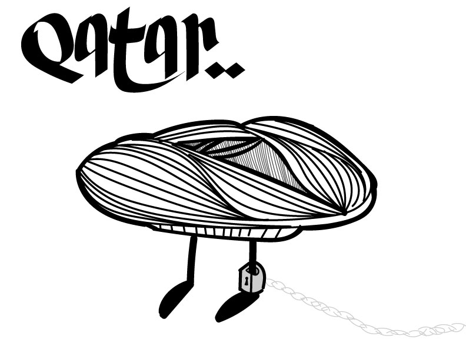

Lab19: CSS Frameworks

Challenges
This lab we were challenged to use bootstrap to create a page with a nav bar, add a picture and then check how it is viewed by various devices.
Problems
We ran into issues outside of the workspace this time, I had my power go out so I was unable to work on the lab the day before it was due, because of this we had to get together another time.
We struggled a bit with understanding the directions but with the help of some classmates we were able to understand what exactly was supoosed to go in the head section as well as figure out what the links did.
We had issues with solving the paths for the nav bar but we just copied the full path from Atom and that solved it.
Results
We went with a simple, almost free form layout and this time nick and I decided to experiment with the portal function in Atom, we worked on the same document together and this was honestly something we should have been using from the start.
It made work easy and we came out with a working page. I look forward to using the portal function in future projects!